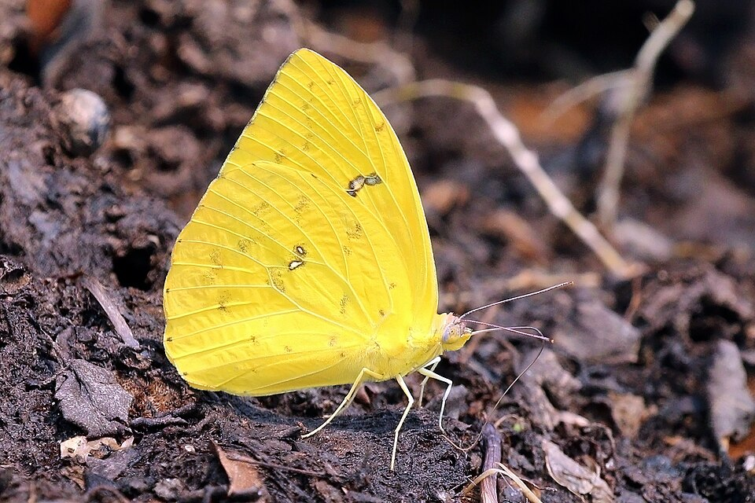
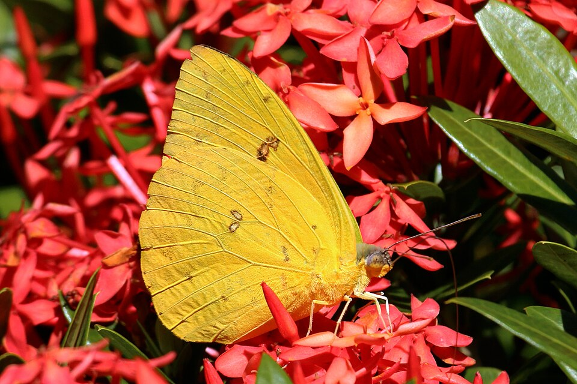
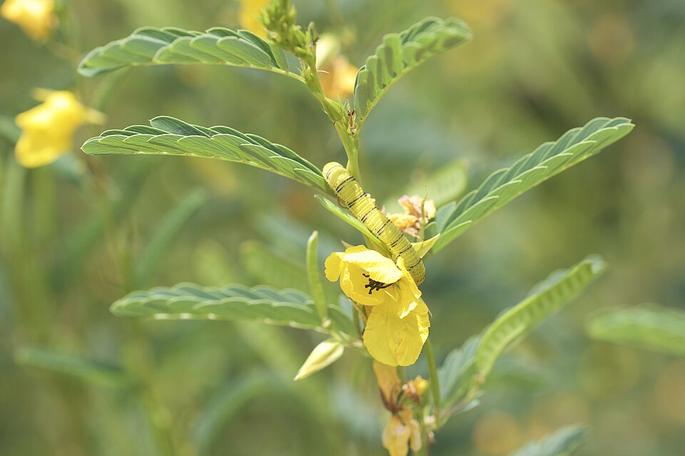

Phoebis sennae
PossibleThe strongest migrant we will actually watch, but Cape Coral sits south of where most fall Cloudless Sulphurs stop. Late August is early. What you see now is mostly local breeding on partridge pea and senna. The big yellow one high over the street in October is the pulse.


Yards, weedy lots, roadsides, open parks.
Partridge pea
Chamaecrista fasciculatasensitive pea
Chamaecrista nictitanssicklepod
Senna obtusifoliaprivet wild sensitive plant
Senna ligustrinaChristmas senna
Senna pendula is a common ornamental host and invasive here — do not tell people to plant it.orange patch on the hindwing
apricot, not canary
Cloudless male is the unmarked yellow one.
Yes. Year-round resident plus late-summer/fall buildup. Peak September–October. Most fall migrants stop north of Lake Okeechobee.